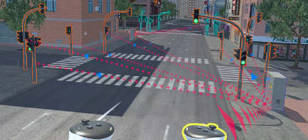

IEEE ISMAR 2024 · Adjunct · 2024
An XR GUI for Visualizing Messages in ECS Architectures

BibTeX
@inproceedings{yang2024xrgui,
title={An XR GUI for Visualizing Messages in ECS Architectures},
author={Yang, Ben and He, Xichen and Li, Jace and Elvezio, Carmine and Feiner, Steven},
booktitle={2024 IEEE International Symposium on Mixed and Augmented Reality Adjunct (ISMAR-Adjunct)},
pages={640--641},
year={2024},
doi={10.1109/ISMAR-Adjunct64951.2024.00189}
}